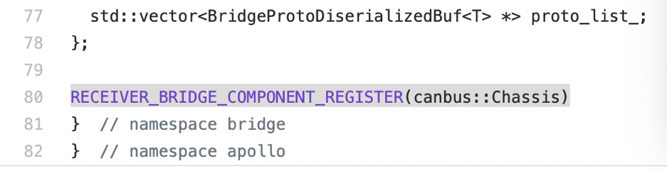
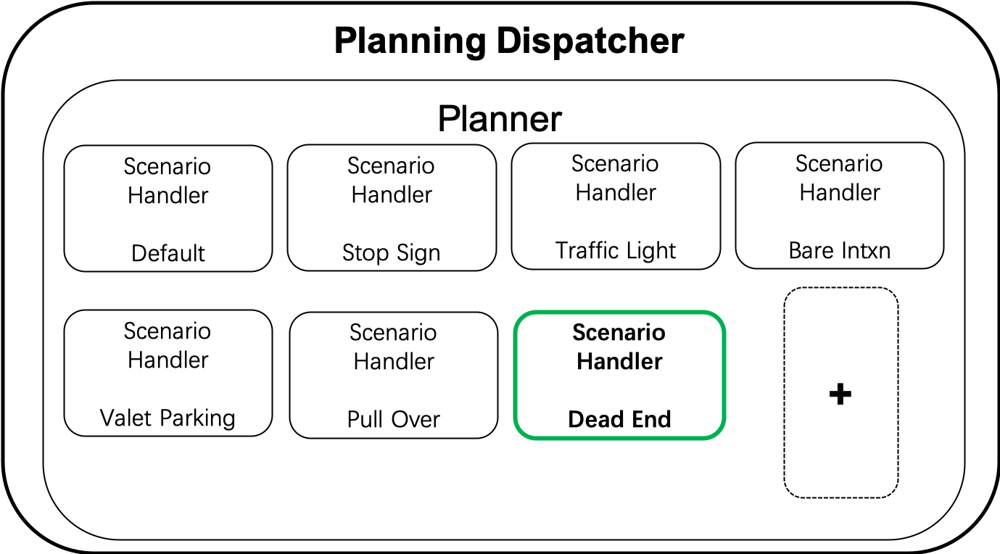
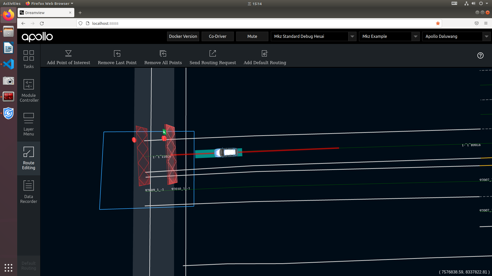
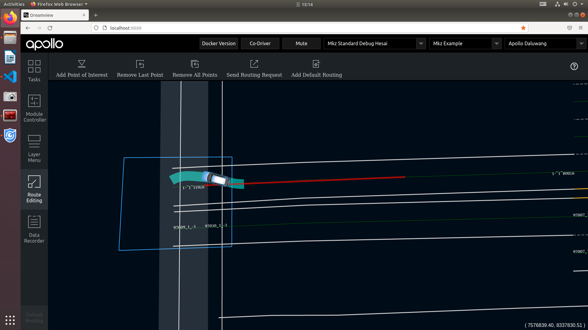
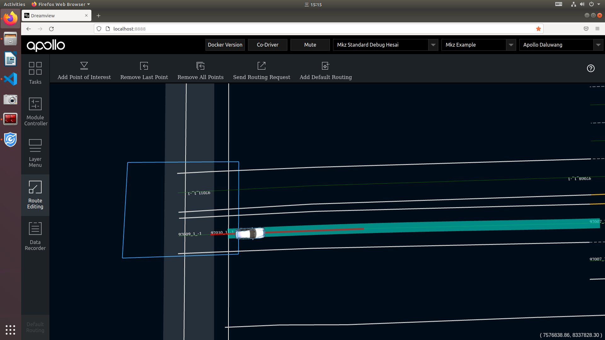

Apollo 整体架构¶
Apollo 可分为四层技术栈：
- 参考车辆平台
Reference Vehicle Platform。apollo 抽象了一个”参考车辆平台”层，通过电子化的方式控制车辆的行驶行为。（线控汽车）
CAN 卡能连通无人驾驶计算机系统和汽车底层控制网络，向汽车发送加速，制动和转向信号。
- 参考硬件层
Reference Hardware Platform。实现计算能力，包括计算单元、GPS/IMU、HMI Device 等；
GPS 定位的基本原理，车载 GPS 接收器计算无线电信号到达卫星 Satellite 1 2 3 的距离，再利用三角定位法定位车辆位置。
惯性测量单元（IMU，Inertial Measurement Unit）：在惯性坐标系中，测量汽车在 3 个方向（X，Y，Z）的加速度，将加速度对时间进行积分，可获得距离数据，然后将距离数据导入导航系统中即可测量车辆的速度，偏航角和位置信息。
激光雷达（LiDAR）：激光雷达原理，发送和接受激光信号的时间差乘以光速，即为激光发生器和障碍物间的距离。目前安装在无人车四周的激光雷达一般用不小于8线束，安装在车顶的一般不小于16线束。
毫米波雷达（Millimeter Wave Radar）：频率在10GHz~200GHz的电磁波，波长在毫米数量级(1-10mm)。目前无人驾驶应用的主要有三种，短距离雷达24GHz，长距离雷达77GHz，79GHz。
超声波雷达(Ultrasonic Radar）：安装于车辆前后保险杠上，用于近距离障碍物的检测，15~500cm的检测范围。
视觉传感器：也就是摄像头，有单目，双目，三目，环视摄像机（鱼眼镜头）。依靠成像的像素点图，从而让无人驾驶车了解周围环境。
- 软件平台层
最核心的层。
实时操作系统（RTOS，Real Time Operation System）：根据传感器测量的数据信息，及时进行计算和分析并执行相应的操作。比如，传感器检测到前方有移动障碍物，RTOS 必须及时计算并分析出障碍物是行人，汽车还是其他，预测障碍物的移动方向，并决定无人驾驶车是减速还是超车等。
运行时框架（Runtime Framework）：Apollo 系统运行时的环境，也即是定制版的 ROS（机器人操作系统）， 它含有多个自治系统模块，如接受模块，处理和发布自己的消息。共享内存的功能和性能（一次写入，多次读取），去中心化（解决单点故障问题）和数据兼容性（Protobuf 消息）。
应用程序模块层：应用程序软件平台拥有各种模块，包括地图引擎，定位，感知，路径规划，控制，端到端驾驶以及 HMI 交互模块。
- 云服务层
在云服务层开放了数据开放平台和唤醒万物的 DuerOS。
高精度地图（HD maps）
仿真环境（Simulation）
数据平台（Data Platform）
安全（Security）
空中软件升级（OTA）
智能语音系统（DuerOS）
Apollo 源码剖析：
Apollo modules¶
Apollo 源码主要是 C++ 实现的，也有少量 Python，主要程序在 apollo/modules 目录中：
其中每个模块的作用如下：
apollo/modules/audio音频模块检测来自活动应急车辆（active emergency vehicle）的警报器声音。它检测并输出警报器的开/关状态、移动状态和警报器的相对位置。当检测到活动的紧急车辆时，你也可以在 Dreamview 上看到活动警报。
输入：音频信号数据（cyber channel
/apollo/sensor/microphone）。输出：音频检测结果，包括警报器激活/不激活状态（active/inactive），移动状态（接近/离开/静止（approaching/departing/stationary）），以及位置（cyber channel
apollo/audio/audio_detection）。apollo/modules/bridge该模块为其他 Apollo 模块提供了一种与 Apollo 以外的进程通过套接字进行交互的方式。它包括发送器和接收器组件。
输入：在发送器（sender）组件中，只有一个输入，即 proto 结构的发送器处理。在接收器（receiver）组件中，其输入与其他组件不同。它的输入来自 UDP 套接字。
输出：发送方的输出是通过 UDP 套接字的方式。接收者有一个输出，是接收方处理。
启动：Bridge 的启动与其他模块的启动是一致的。桥接器（
bridge）包含两个子模块，分别是：sender和receiver。sender负责发送 udp 数据，而接收器则负责接收由 udp 客户端发送的数据包，并对其进行解析，然后发送给已经注册的响应该消息的模块。发送方的 Sender的启动命令如下：$ cyber_launch start /apollo/modules/bridge/launch/bridge_receiver.launch
Receiver 的启动命令如下：
$ cyber_launch start /apollo/modules/bridge/launch/bridge_sender.launch
修改配置
Receiver 默认监听 8900 端口，并可以通过修改其相应的配置文件来改变被监控的端口号。可以通过修改其相应的配置文件来改变被监控的端口号。相应的 配置文件可以在
apollo/modules/bridge/dag/bridge_receiver.dag文件中进行查询：module_config { module_library: "/apollo/bazel-bin/modules/bridge/libudp_bridge_receiver_component.so" components { class_name: "UDPBridgeReceiverComponent<canbus::Chassis>" config { name: "bridge_receiver_Chassis" config_file_path: "/apollo/modules/bridge/conf/udp_bridge_receiver_chassis.pb.txt" } } }
它的配置文件在
apollo/modules/bridge/conf/udp_bridge_receiver_chassis.pb.txt：topic_name: "/apollo/canbus/Chassis" bind_port: 8900 proto_name: "Chassis" enable_timeout: false
注意
如果你想从 docker 之外的客户端接收数据，你需要在启动 docker 时用
-p参数进行端口映射。在启动 docker 时使用-p参数做端口映射，你需要修改docker/scripts/dev_start.sh文件，如下所示：
在
-d \.之后添加一个新行-p 8900:8900。这允许你映射 docker 的内部和外部端口，你可以接受由 docker 的外部客户端发送的数据。发送方配置文件的搜索方式与接收方相同。发送
ADCTrajectory的发送方默认为127.0.0.1：8900；发送LocalizationEstimate的发送方默认为127.0.0.1：8901。上述 ip 地址和端口号可以通过相应的配置文件进行修改。配置文件的信息如下 。
。添加新的消息
为了通过 udp 发送/接收新消息，你可以在相应的文件中添加两行代码。如果你想添加消息
apollo::test::PbTest，如下所示 。在文件udp_bridge_receiver_component.h第 80 行后添加新的一行：RECEIVER_BRIDGE_COMPONENT_REGISTER(test::PbTest)
同时在
udp_bridge_receiver_component.cc的 197 行后加入BRIDGE_RECV_IMPL(test::PbTest)

增加的 Sender 与 receiver 是一致的。代码修改完毕后，保存它，然后添加相应的配置 文件、启动文件和 dag 文件。重新编译代码并启动它。
apollo/modules/calibration校准模块，使用前必须对系统进行校准和标定，包括激光雷达与摄像头、毫米波雷达与摄像头等。所谓校准就是要对齐激光雷达、摄像头以及毫米波雷达获得的信息，我们知道激光雷达可以获得详细的3D信息，但是不能获得颜色信息，摄像头可以获得颜色信息，但是无法获得深度等3D信息，毫米波雷达不能获得颜色信息，但是可以获得3D信息，三者获得的信息对齐后，就可以同时获得实际环境中的3D信息和颜色信息。
apollo/modules/canbusCanbus 接受并执行控制模块的命令，并收集汽车的底盘状态作为对控制的反馈。
输入：控制命令。
输出：底盘状态和底盘详细状态。
CAN 总线模块的主要部件有：
vehicle：包括车辆控制器和消息管理器的车辆
您自己的车辆控制器和消息管理器可以通过在“
vehicle”的文件夹中继承“VehicleController”和“MessageManager”实现。记得在“VehicleFactory”注册你的车辆。apollo/modules/common公共源码模块。包括如日志，工厂模式的实现，日志系统，监控模块，数学算法等。
adapters
不同的模块间能通过 topic 彼此通信。在
adapter_flags中定义了大量的 topic 名称。configs 或者 data
可以在这里对车辆进行配置。
filters
实现了一些滤波器类，包括低通数字滤波器、均值滤波器等。
kv_db
用于存储系统范围参数的轻量级“键-值”数据库。
latency_recorder
可以记录时延。
math
包含许多有用的数学库。
monitor_log
定义日志记录系统。
proto
定义多个项目范围的序列化数据。
status
用于确定某些函数是否成功执行， 否则提供有用的错误消息。
util
包含带有注册的工厂设计模式的实现， 一些字符串解析函数，以及一些解析工具用来解析序列化数据。
vehicle_model
该类指定车辆的模型。
vehicle_state
该类指定车辆的当前状态（例如位置、速度、航向等）。
apollo/modules/control控制模块。基于决策规划的输出路径及车身的状态使用不同的控制算法来输出控制命令，如转向刹车，控制等。
本模块基于规划和当前的汽车状态，使用不同的控制算法来生成舒适的驾驶体验。控制模块可以在正常模式和导航模式下工作。
模型参考自适应控制（Model Reference Adaptive Control，MRAC）
这种新的算法被设计用来有效地抵消边线转向的动态延迟和时间延迟。它还确保了更快、更准确的转向控制动作，以跟踪规划轨迹。有了 MRAC，Apollo 控制现在支持快速和急转弯的情况，如连续的侧向通过。
控制剖析服务（Control Profiling Service）
这项服务根据道路测试或模拟数据，对车辆的控制性能进行系统的定量分析。剖析服务不仅有助于支持车辆控制系统的高效迭代设计周期，而且还为用户提供对当前性能和模块内看到的改进的见解。
输入
规划轨迹
车辆状态
定位
Dreamview 自动模式更改请求
输出
给底盘的控制指令（转向，节流，刹车）。
apollo/modules/data数据模块。收集、存储、处理收集到的各种数据的。
apollo/modules/dreamview可视化模块。
Dreamview 或 Apollo 的人机界面模块提供了一个网络应用，帮助开发者将其他相关的自主驾驶模块的输出可视化，如车辆的规划轨迹、汽车定位、底盘状态等。
输入
目前，Dreamview 监控以下信息：
定位（Localization），由 Protobuf 消息
LocalizationEstimate定义，可以在文件localization/proto/localization.proto中找到。底盘（Chassis），由 Protobuf 消息
Chassis定义，可以在文件canbus/proto/chassis.proto中找到。规划（Planning），由 Protobuf 消息
ADCTrajectory定义，可以在文件planning/proto/planning.proto中找到。监控器（Monitor），由 Protobuf 消息
MonitorMessage定义，可以在文件common/monitor/proto/monitor.proto中找到。感知障碍（Perception Obstacles），由 Protobuf 消息
PerceptionObstacles定义，可以在文件perception/proto/perception_obstacle.proto中找到。预测（Prediction），由 Protobuf 消息
PredictionObstacles定义，可以在文件prediction/proto/prediction_obstacle.proto中找到。路由（Routing），由 Protobuf 消息
RoutingResponse定义，可以在文件routing/proto/routing.proto中找到。
输出
一个基于网络的动态 3D 渲染，在模拟世界中监测到的信息。
相关论文：
apollo/modules/drivers驱动模块。各种传感器驱动。
camera
camera包是基于 V4L USB 相机设备实现封装，提供图像采集及发布的功能。本驱动中使用了一台长焦相机和一台短焦相机。输出 channels
/apollo/sensor/camera/front_12mm/image
/apollo/sensor/camera/front_6mm/image
/apollo/sensor/camera/front_fisheye/image
/apollo/sensor/camera/left_fisheye/image
/apollo/sensor/camera/right_fisheye/image
/apollo/sensor/camera/rear_6mm/image
启动 camera 驱动
请先修改并确认 launch 文件中的参数与实际车辆相对应
# in docker bash /apollo/scripts/camera.sh # or cd /apollo && cyber_launch start modules/drivers/camera/launch/camera.launch
启动 camera + video compression 驱动
请先修改并确认launch文件中的参数与实际车辆相对应
# in docker bash /apollo/scripts/camera_and_video.sh # or cd /apollo && cyber_launch start modules/drivers/camera/launch/camera_and_video.launch
常见问题
如果出现报错“sh: 1: v4l2-ctl: not found”，需要安装
v4l2库。
sudo apt-get install v4l-utils
canbus
CAN 客户端：因为它是被不同的使用 CAN 总线协议的传感器共享的。您自己的 CAN 客户端可以通过继承
apollo/modules/drivers/canbus/can_client的文件夹中实现的“CanClient”类。记得在“CanClientFactory”注册你的客户机客户端。apollo/modules/localization定位模块。输入 GPS 和 IMU 信息输出自车定位信息。
该模块提供定位服务。默认情况下有两种方法。一种是结合 GPS 和 IMU 信息的 RTK（Real Time Kinematic 实时运动）方法，另一种是融合 GPS、IMU 和激光雷达信息的多传感器融合方法。
输入
在提供的 RTK 方法中，有两个输入：
GPS-全球定位系统。
IMU-惯性测量单元。
在所提供的多传感器融合定位方法中，有三个输入：
GPS-全球定位系统。
IMU-惯性测量单元。
激光雷达-光探测与测距传感器
欲了解更多信息，请参阅多传感器融合定位。
输出
一个Protobuf message 类型的
LocalizationEstimate实例，它可以在localization/proto/localization.proto中找到。
添加定位实现
目前，RTK 方案是在类
RTKLocalization中实现的。如果一个新的定位方法需要用一个名字（例如FooLocalization）来实现，你可以遵循以下步骤：在
proto/localization_config.proto的LocalizationType enum type中添加Foo。转到
modules/localization目录，并创建一个Foo目录。在Foo目录中，根据rtk目录中的RTKLocalization类增加FooLocalization类。FooLocalization必须是LocalizationBase的子类。根据rtk/BUILD还需创建文件foo/BUILD。您需要在函数
Localization::RegisterLocalizationMethods()中注册FooLocalization，它位于CPP文件localization.cc中。您可以通过在函数的末尾插入以下代码来注册：
localization_factory_.Register(LocalizationConfig::FOO, []()->LocalizationBase* { return new FooLocalization(); });
请确保您的代码可以编译包含
FooLocalization的头文件。现在你可以回到apollo根目录，用命令
bash apollo.sh build构建你的代码。
apollo/modules/map高精地图模块。输出结构化地图信息，如车道线，十字路口等。
apollo/modules/monitor监控模块。监控硬件状态，同时把状态发给交互界面。
该模块包含系统级软件，如检查硬件状态的代码和监控系统健康的代码。在 Apollo 5.5 中，监控模块现在可以进行以下检查。
运行模块的状态
监测数据的完整性
监测数据频率
监测系统健康状况（如 CPU、内存、磁盘使用等）
生成端到端的延迟统计报告
注意
你可以为上述前 3 种能力配置你想监控的模块。
硬件监测器
与硬件有关的监测，如 CAN卡/GPS 状态健康检查。检查结果报告给 HMI。
软件监测器
进程监控
它检查一个进程是否正在运行。配置它的方法是
apollo::monitor::ProcessConfproto，其工作原理类似于ps aux | grep <keyword1> | grep <keyword2> | ...
主题监控
它检查一个给定的主题是否被正常更新。用以下方式配置它
apollo::monitor::TopicConfproto.简要监测
它将所有其他特定监视器的结果总结为一个简单的结论，如 OK、WARN、ERROR 或 FATAL。
apollo/modules/perception感知模块。输入激光点云，高精地图，变换坐标，输出 3D 障碍物包括速度大小和方向。
感知模块包含了使用多个摄像头、雷达（前部和后部）和激光雷达识别障碍物的能力，并融合它们各自的轨迹，以获得最终的轨迹列表。
障碍物子模块对障碍物进行检测、分类和跟踪。
该子模块还预测障碍物的运动和位置信息（例如，航向和速度）。
对于车道线，我们通过后处理车道解析像素来构建车道实例，并计算出车道与自我车辆的相对位置（L0, L1, R0, R1等）。
阿波罗 7.0 感知系统有以下新功能：
SMOKE：基于摄像头的障碍物检测模型。
Mask-Pillars：基于激光雷达的障碍物检测模型。
关于新模型的更多细节，请参考 Apollo 7.0中的相机感知和 Apollo 7.0中的激光雷达感知。
架构
感知模块的一般结构如图所示：

详细的感知模块显示如下：

感知模块的输入是：
128 channel LiDAR data (cyber channel /apollo/sensor/velodyne128)
16 channel LiDAR data (cyber channel /apollo/sensor/lidar_front, lidar_rear_left, lidar_rear_right)
Radar data (cyber channel /apollo/sensor/radar_front, radar_rear)
Image data (cyber channel /apollo/sensor/camera/front_6mm, front_12mm)
Extrinsic parameters of radar sensor calibration (from YAML files)
Extrinsic and Intrinsic parameters of front camera calibration (from YAML files)
Velocity and Angular Velocity of host vehicle (cyber channel /apollo/localization/pose)
感知模块的输出是：
The 3D obstacle tracks with the heading, velocity and classification information (cyber channel /apollo/perception/obstacles)
The output of traffic light detection and recognition (cyber channel /apollo/perception/traffic_light)
apollo/modules/planning局部决策规划模块。
Apollo7.0 相对之前的版本，本次新增了断头路场景，增加了”三点掉头”功能，增加了驶入驶出的能力，扩展了城市路网运营边界。
“三点掉头”功能（“three-point turn”）
基于 open space planner 框架，包含以下几个部分：断头路场景转换、开放空间 ROI 构建、掉头轨迹规划。
输入
输入信息：定位、感知、预测、高精地图、路由、任务管理模块。
输出
输出信息：控制模块可执行的顺滑无碰撞轨迹。
Planning 模块架构

场景展示
  
apollo/modules/prediction预测模块。输出感知的障碍物信息及自定位信息输出障碍物未来的轨迹。
预测模块从感知模块接收障碍物，其基本感知信息包括位置、方向、速度、加速度，并生成不同概率的预测轨迹。
输入
障碍物
定位
输出
具有预测轨迹的障碍物
功能
容器
容器存储来自订阅通道的输入数据。目前支持的输入是感知模块的障碍物，车辆定位和车辆规划。
场景
场景子模块分析包括私家车辆的场景。目前，我们有两个定义的场景。
巡航（Cruise）：这个场景包括车道保持和跟踪。
Junction：该场景涉及路口。路口可以有红绿灯和/或停止的标志。
障碍物
Ignore：这些障碍物不会影响自我车的轨迹，可以安全地忽略（例如，障碍物太远）。
Caution：这些障碍物有很大可能与小我私家车发生互动。
Normal：不属于忽略或注意的障碍物被默认为置于正常状态。
评估器
评估器对任何给定的障碍分别预测路径和速度。评估器通过使用存储在
prediction/data/模型中的给定模型输出路径的概率来评估路径（车道序列）。将提供三种类型的评估器，包括：
成本评估器：由一组成本函数计算的概率。
MLP 评估器：用 MLP 模型计算的概率。
RNN 评估器：用 RNN 模型计算的概率。
巡航 MLP+CNN-1d 评估器：概率是使用 MLP 和 CNN-1d 模型的混合来计算巡航情况的。
Junction MLP 评估器：使用交界口情景的 MLP 模型计算概率。
交界处地图评估器：使用基于语义地图的 CNN 模型计算交界处场景的概率。这个评估器是为警告级别的障碍物创建的。
Social 互动评估器：这个模型用于行人，用于短期轨迹预测。它使用社会 LSTM。这个评估器是为警戒级别的障碍物创建的。
语义 LSTM 评估器：这个评估器用于新的 “注意障碍物 “模型，以产生短期轨迹点，这些轨迹点是用 CNN 和 LSTM 计算的。车辆和行人都在使用这个相同的模型，但有不同的参数。
Vectornet LSTM 评估器：该评估器用于替代语义 LSTM 评估器，为 “注意 “标记的障碍物生成短期轨迹点。更多细节见vectornet LSTM 评估器 readme。
预测规划交互评估器：可以参考 预测规划交互评估器简介.
预测器
预测器生成障碍物的预测轨迹。当前支持的预测器包括：
空：障碍物没有预测的轨迹
单行道：在公路导航模式下障碍物沿着单条车道移动。不在车道上的障碍物将被忽略。
车道顺序：障碍物沿车道移动
移动序列：障碍物沿其运动模式沿车道移动
自由运动：障碍物自由移动
区域运动：障碍物在可能的区域中移动
apollo/modules/routing全局规划模块。输入包括地图信息各起点终点地址，输出一个全局的导航信息。
路由模块根据请求生成高级导航信息。
路由模块依赖于路由拓扑文件，通常称为 Apollo 中的
routing_map.*。路由地图可以通过命令来生成。bash scripts/generate_routing_topo_graph.sh
输入
地图数据
路由请求（开始和结束位置）
输出
路由导航信息
apollo/modules/storytellingstorytelling是一个全局性的、高水平的场景管理器，帮助协调跨模块的行动。为了在城市道路上安全操作自动驾驶汽车，需要复杂的规划场景以确保安全驾驶。这些复杂的场景可能涉及不同的模块，以确保适当的机动性。为了避免对这种场景采取基于顺序的方法，创建了一个新的孤立的场景管理器，即 “Storytelling”模块。这个模块创建的故事是复杂的场景，会触发多个模块的行动。根据一些预定义的规则，该模块创建一个或多个故事，并发布到/apollo/storytelling频道。这个模块的主要优点是对驾驶体验进行微调，并将复杂的场景打包成故事，可以被其他模块如计划、控制等订阅。输入
Localization
HD Map
输出
Story：可以被其他模块订阅的
apollo/modules/task_manager待更
apollo/modules/third_party_perception第三方感知模块。
在 Apollo 2.5 中，第三方感知模块结合了第三方传感器，如 Mobileye 和 Conti/Delphi 雷达的输出，并通过简单的融合创造出类似于障碍物/车道检测信息的感知输出，如感知障碍物接口中定义的那样。这个模块只是为了在 2.5 版本之前，在感知模块完全准备好之前，为实际车辆的预测/规划/控制算法服务。我们建议在 Apollo 2.5 正式发布后，使用’
modules/perception’来代替你的测试目的。输入
Radar data (ROS topic /apollo/sensor/conti_radar or /apollo/sensor/delphi_esr )
Mobileye data (ROS topic /apollo/sensor/mobileye)
输出
The 3D obstacle tracks with the heading, velocity and classification information (ROS topic /apollo/perception/obstacles)
The lane marker information with fitted curve parameter, spatial information(l0,r0, etc) as well as semantic information (lane type) (ROS topic /apollo/perception/obstacles)
apollo/modules/tools通用监控与可视化模块。
这些工具大多是用 Python 编写的，并依赖于编译后的 proto 模块。所以一般来说，你需要做以下步骤来使其良好运行。
注意
本页面中的所有脚本都是从 Apollo 根目录中引用的。
# Compile everything including python proto libs. apollo.sh build # Setup PYTHONPATH properly. source scripts/apollo_base.sh
apollo/modules/guardian待更
apollo/modules/transform待更
apollo/modules/contrib待更
apollo/modules/v2x车路协同。
对象级别的车端感知与路侧感知融合。
深度学习算法模块¶
感知
实现了基于 PointPillars 的激光点云障碍物识别模型，线上采用了 TensorRT 来对模型进行加速，每个周期的识别速度优于 70ms。
预测
实现了基于语义地图的低速行人预测模型，针对于低速园区的场景，继承了语义地图对于环境的丰富表达，更精准的预测行人低速轨迹。
规划
实现了基于语义地图的模仿学习，通过大量的真实路测数据，模仿人类司机在一些特定场景下动态避障的能力，与已有基于优化的规划相结合，显著增强了行车的安全性和舒适性。
DreamView¶
DreamView 提供了远程平行驾驶的接口模块，它不仅定义了压缩车端视频和音频的信号格式，也定义了完整的远程操纵命令格式，让车端可以接受远程操作员指令，并把指令转换成相应的规划和控制命令，来实现对车辆的远程操作。
无人驾驶需要对紧急车辆，如救护车、消防车、警车等进行识别处理。
紧急车辆检测
通过多声道麦克风来捕捉车辆周围的声音，采用深度学习的方法来检测紧急车辆，准确率达到95%以上，同时通过算法来判断紧急车辆的方位，以及是否逼近或者远离自动驾驶车辆。
系统支持¶
全面支持 C++14、Python 3.6、编译工具 Bazel 3.4 和 GCC 7.5，主要的依赖库譬如 PCL TensorTR PyTorch 等也做了全面的升级，这些升级不仅与业界保持最新同步，也使得 Apollo 算法有了更优的性能。
CUDA 升级到11.1版本，以支持 Nvidia Ampere（30x0 系列）GPU，NVIDIA 驱动程序 >= 455.32
LibTorch（包括 CPU 和 GPU 版本）相应地升级到 1.7.0 版本。